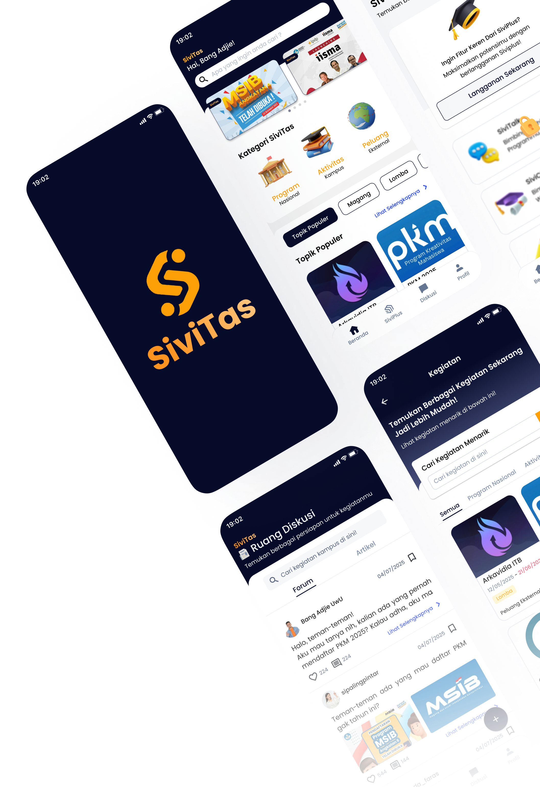
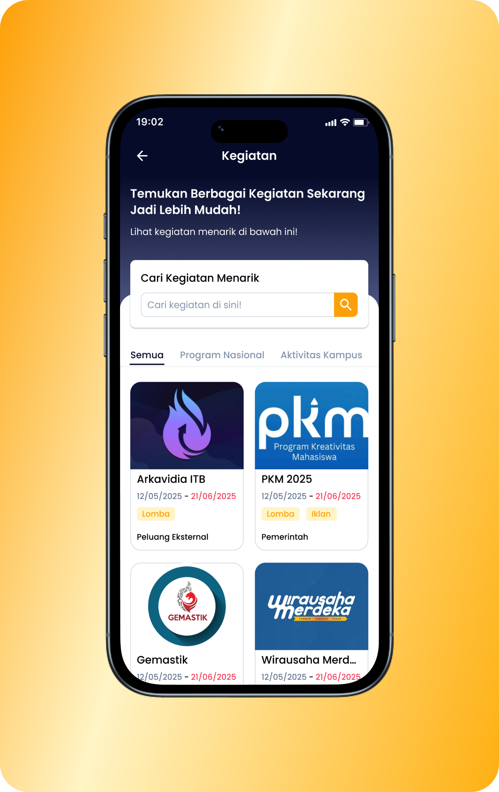
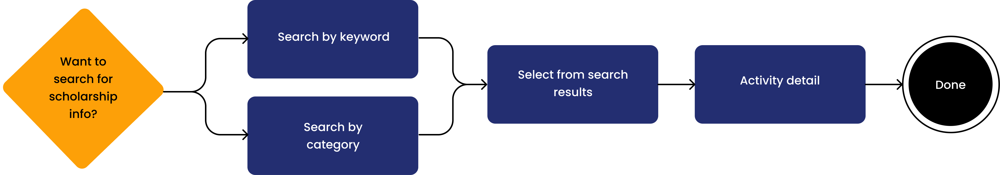
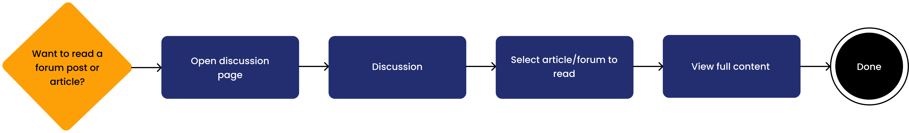
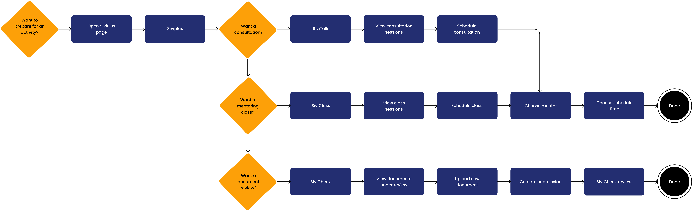
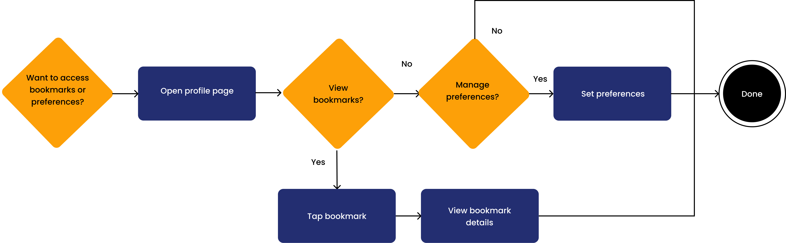
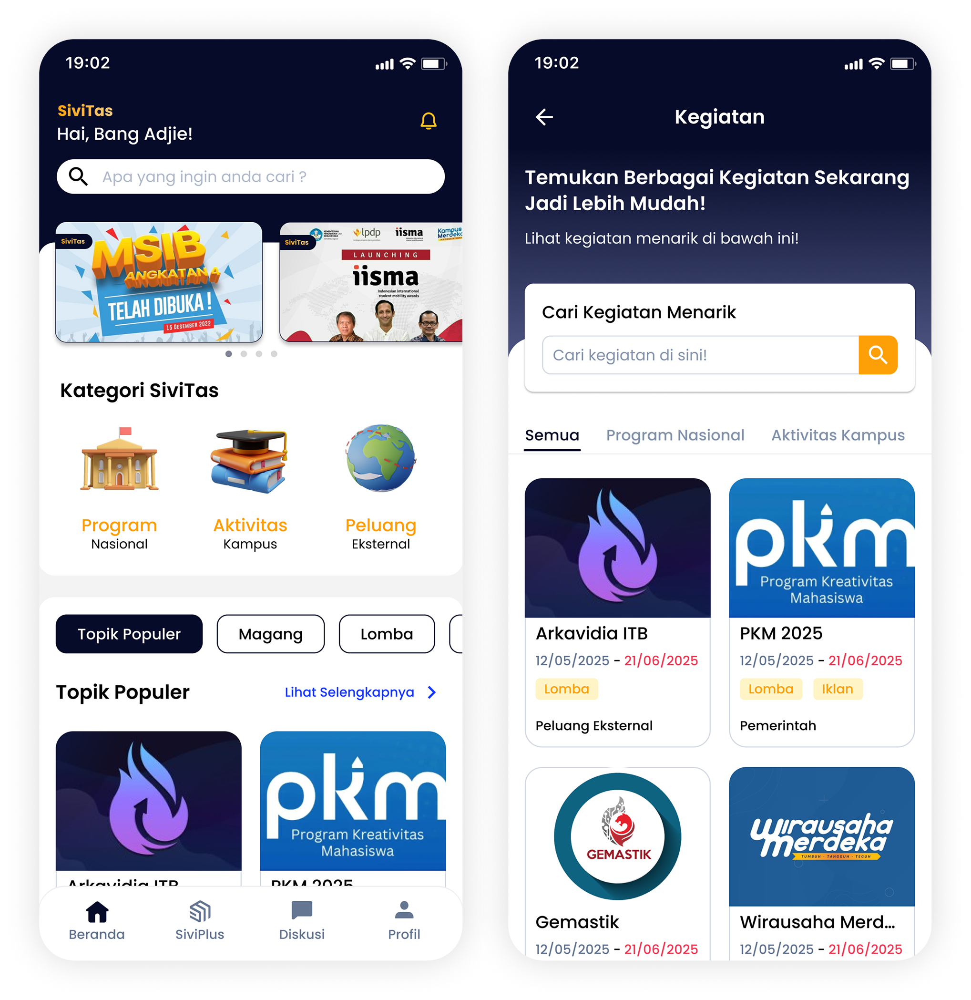
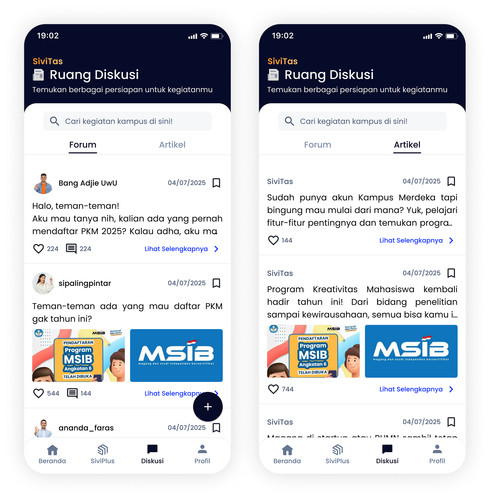
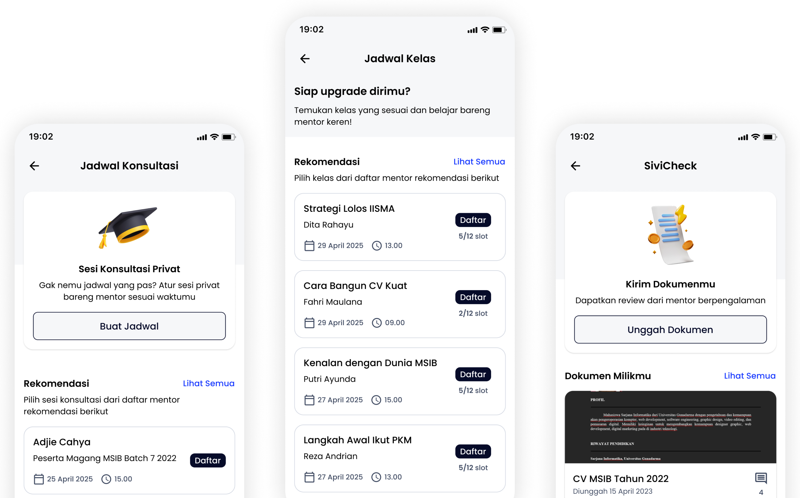
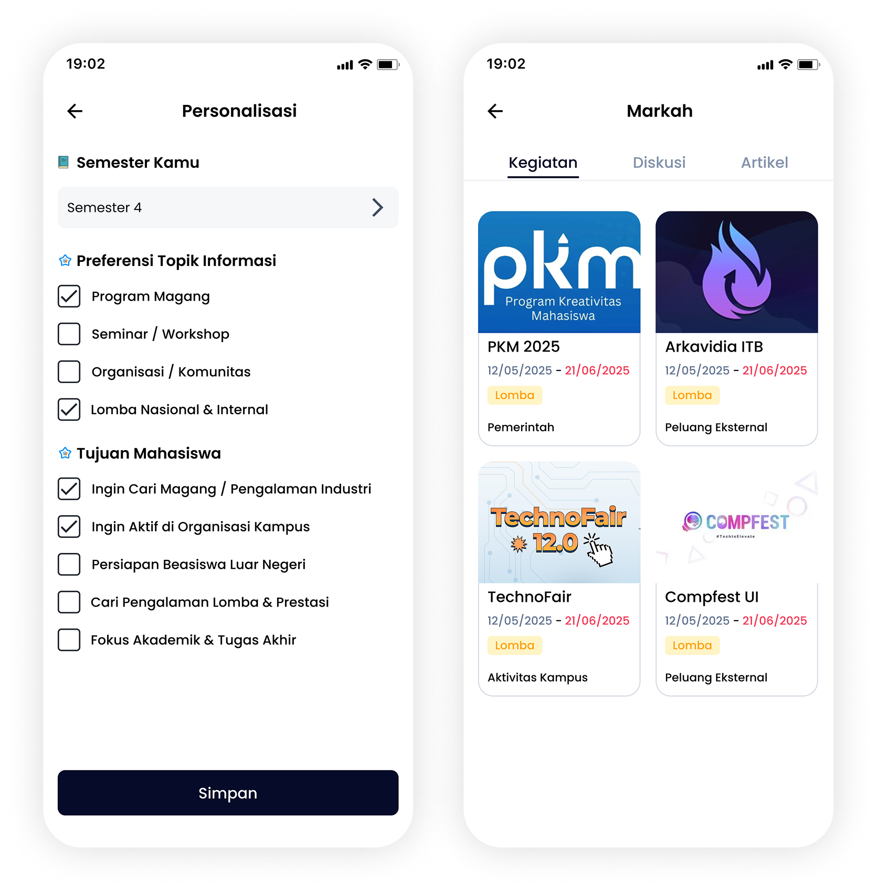

Integrated Digital Solution for Student Information

What Is SiviTas?
SiviTas is a mobile application designed as an integrated solution to help students access important campus information while building a dynamic campus community.
It addresses the information fragmentation students often face — scholarships, internships, competitions, seminars, and organizational activities scattered across disconnected platforms — by bringing everything into one accessible hub.
Contribution
Research and UI Design
Tools

Problem Statement
Derived from a quantitative survey and interviews with active students.
- Students struggle to find campus activity information (scholarships, internships, competitions) because it's scattered across disconnected platforms.
- No reminder or recommendation system exists to match students' interests, causing many opportunities to be missed.
- The lack of communication and discussion spaces among students limits information exchange and collaboration.
Research
To understand how students access campus information and identify gaps in existing channels, a quantitative survey was distributed to active students, with Universitas Gunadarma as the pilot campus. Findings were synthesized through empathy mapping and persona development.
User Persona
Rani is a 5th-semester Information Systems student at a private university in Depok. She's active in campus organizations and interested in UI/UX, and is currently looking for her first internship experience in the digital industry.
- Gain internship experience in UI/UX
- Put together an attractive CV and portfolio
- Prepare herself for job interviews
- Unsure which internship program fits her interests
- Doesn't know how to structure a strong portfolio
- Lacks mentor support or feedback
- Proactive and a visual learner
- Enjoys trying new things
- Sometimes struggles to focus without a deadline
- Figma
- Telegram
Solution
User Flow
SiviTas was designed with an intuitive navigation flow tailored to how students actually look for and act on campus information.
Scholarship Information Search Flow

Forum & Article Reading Flow

SiviPlus Preparation Flow

Profile & Preferences Flow


Curated Activity Homepage
The homepage surfaces curated campus and national programs — scholarships, competitions, internships, and seminars — so students see what's relevant the moment they open the app.

Discussion Forum & Articles
Students can ask questions, share experiences, and read articles from peers who've been through the same application processes and campus activities.

SiviPlus
A premium layer offering consultation sessions, mentoring classes, and document review (CVs, motivation letters, portfolios) to help students prepare for competitive opportunities.

Profile & Preferences
Students can view bookmarked activities, manage information preferences, and track their interaction history all from one profile space.
Reflection
This project explored how a single, well-organized platform can meaningfully reduce the friction students face when trying to find opportunities scattered across disconnected channels.
SiviTas reinforced how valuable it is to root feature decisions in real survey data rather than assumptions — and how a simple reminder system can be the difference between an opportunity found and one missed.